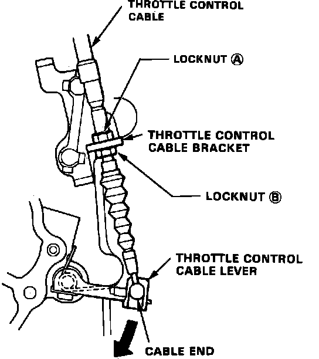
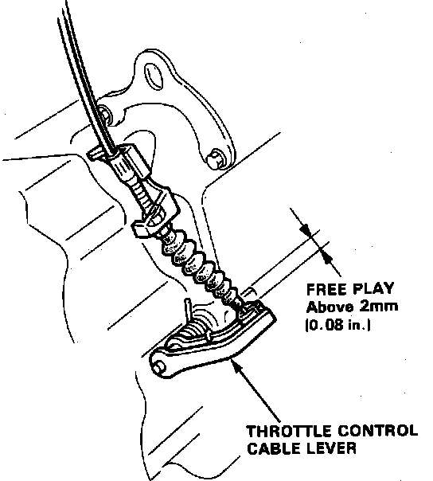

Throttle Valve Cable/Linkage: Adjustments
Fig. 8 Throttle Cable Adjustment:

Fig. 9 Throttle Cable Lever Freeplay Measurement:

1. Loosen locknuts on throttle control cable, Fig. 8.
2. Press throttle control lever down until it stops, then rotate locknut (A), until all freeplay is removed from the cable.
3. While continuing to press down on throttle control lever, pull open throttle control link and ensure control lever moves at the precise time the link begins to move.
4. Adjust cable as necessary until operation is as described in step 3.
5. Prior to starting engine, depress accelerator pedal fully and ensure at least 0.08 inch control lever freeplay exists, Fig. 9. Also, ensure cable moves freely as accelerator pedal is actuated.